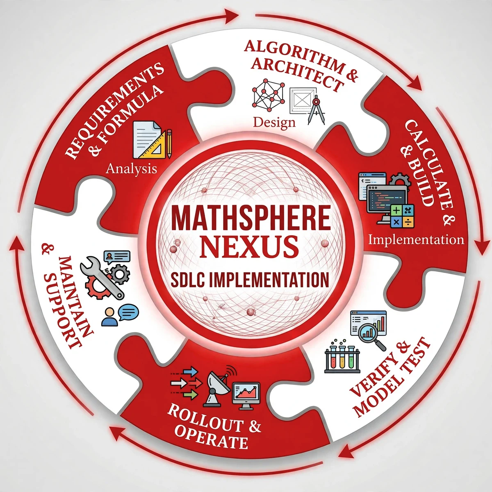

MathSphere Nexus
MathSphere Nexus
About MathSphere Nexus
MathSphere Nexus is a software company built on one conviction: when software acts, a person should stay in charge.
Our house project is Wizard Central — a local-first system of small, specialist tools called wizards, and, in development, the Wizard Central Pro AI Modes Toolkit: a gate between a person and their AI models, where the person grants access, reviews what the model proposes, and approves anything that matters. Destructive actions ask twice. Every crossing is written to a hash-chained receipts log, so the history can be checked, not just believed.
Available now, free: the Wizard Central Toolkit (Apache 2.0) — a router plus 12 specialist wizards, 147 subcommands, running entirely on your own machine.
Install: pip install wizard-central-toolkit
PyPI: pypi.org/project/wizard-central-toolkit
GitHub: github.com/rewardsbycode-eng/wizard-central-toolkit
On DEV: the launch article
How we build — the SDLC wheel
Every project in this house is built the same way, in a loop of six stages. This is not a method we admire from a distance; it is a description of the work as it actually happens here, and it is the procedure we will keep following.

Requirements & Formula — Analysis. Work starts in writing: requirements, decisions and counts are recorded before code moves, and a decision is never treated as built, or the built as proven.
Algorithm & Architect — Design. Designs are settled on paper first. Where a design can be proven small, it is: a prototype must pass the house rules — receipts, tests, an honest record — before it counts as evidence.
Calculate & Build — Implementation. The author writes and commits every line himself. Collaborators draft, check and verify; the hand on the code is one hand.
Verify & Model Test. Nothing is called done until its tests pass on the reference machine, and AI features are run live against real models — weakest first, because a system that holds on the weakest seat holds on any seat. The runs are published as Run Records.
Rollout & Operate. What ships, ships with its records: releases carry their evidence — run records, receipts and verdicts — where anyone can read them.
Maintain & Support. Mistakes are written into an open deviation log and owned in plain words, and a fix is verified the same way new work is. Then the wheel turns again.
The Diary post that placed the wheel here: The wheel we work by.
A command is what you type. The name is what the project is.
— Alexander Sanchez, Founder & Principal Ideology Architect, MathSphere Nexus